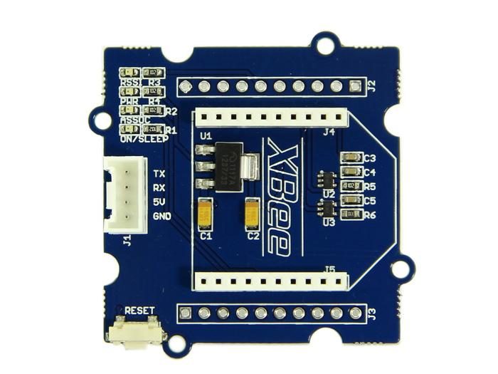
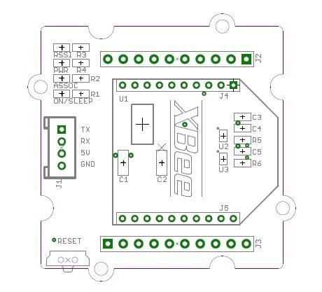
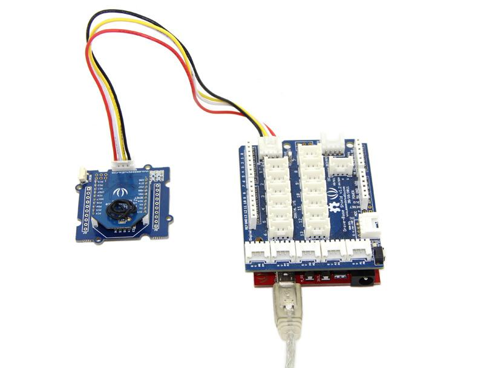

Grove - Bee Socket is an adapter of Xbee serials which can connect wireless modules with Arduino, such as WIFI Bee, RF Bee, Bluetooth Bee, etc. It is Arduino compatible and more effective to conduct operations of peer to peer and mesh network ran by wireless modules. Regulator CJT1117 guarantees Xbee of stable 3.3 voltage. LEDs can perform work modes of the grove clearly.
Grove-Bee Socket has the same functions as XBee Shield. Grove-Bee Socket and Arduino are connected by cables, and XB Shield is a standard adapter that can plug to Arduino.
Model: COM05081P


J1: Grove Interface, used for connecting to UART Interface of Arduino/Seeeduino.
J2,J3: Breakout connection for every pin of Xbee.
J4,J5: Bee sockets
U1: CJT1117 IC, Low dropout linear regulator. Used for power 3.3V for XBee modules.
U2,U3: SN74LVC1G125 IC, protects your XBee from 5V Signal, converting it to 3.3V.
RSSI indicator: XBee RX Signal Strength Indicator.
PWR LED: Power Indicator.
ASSOC indicator: Xbee Associated Indicator.
ON/SLEEP LED: XBee module Status Indicator.
Using the Grove - Bee Socket, it is easy to control Bee Modules by Arduino/Seeeduino. Here take the RF Bee as an example, we'll tell you how to use it.

If you need further information about how to communicate, please refer to WIKI pages of relevant Bee modules.
Copyright (c) 2008-2016 Seeed Development Limited (www.seeedstudio.com / www.seeed.cc)